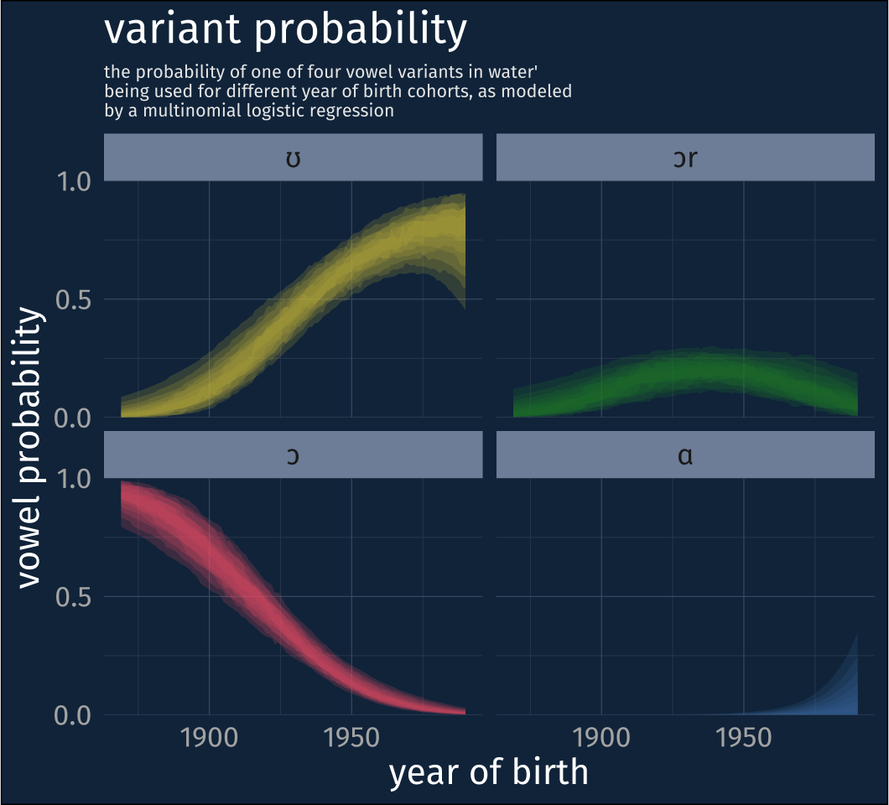

libraries
library(tidyverse)
library(khroma)
library(scales)
library(geomtextpath)
library(ggnewscale)
library(tuneR)
library(seewave)
library(readtextgrid)This is part 2 of my blog posts to accompany my ADS2023 Poster.

As I said in the previous post, people seem to be very aware now that pronouncing “water” as [wʊɾɚ] is a feature of Philadelphia English, but the surge in written recognition from 2000 onwards isn’t an accurate indicator of when people started pronouncing it that way.
The order in which I actually approached this is a little different from how it’s laid out in the poster, but for the sake of blogginess, I’ll describe it in more chronological order. My bias was that this was a very old feature of Philadelphia English, so I started with the oldest records of Philadelphia speech I know of in the Linguistic Linguistic Atlas of the Middle and South Atlantic States (LAMSAS) (Kretzschmar et al. 1993).
LAMSAS was a linguistic atlas project carried out between 1933 and 1974. The interviews had a heavy focus on regional and dialect words, and for the earliest interviews, the only records available are fieldworker transcriptions. In 1939, Guy Lowman interviewed 8 people in Philadelphia, and for one target item, transcribed how they pronounced “glass/tumbler of water.”
| LAMSAS ID | Gender | Race | Age | Year of Birth |
|---|---|---|---|---|
| PA1G | man | white | 70 | 1869 |
| PA1A | man | white | 68 | 1871 |
| PA1C | woman | white | 68 | 1871 |
| PA1E | man | white | 68 | 1871 |
| PA1D | man | white | 66 | 1873 |
| PA1F | man | white | 62 | 1877 |
| PA1H | woman | white | 59 | 1880 |
| PA1B | man | white | 43 | 1896 |
I’m not going to have much more to say about these LAMSAS speakers, though, because they were all transcribed as saying [wɔɾɚ], which would be the same vowel as in wall or walk, not as in wood. In fact, I’ve done some more combing through the LAMSAS records from counties surrounding Philadelphia in both Pennsylvania and New Jersey, and there are no records of [wʊɾɚ].
On the one hand, I was really surprised by this, but I don’t know why I should have been. There’s really no reason why [wʊɾɚ] should have been a long-standing feature of the dialect as long as a century ago. Moreover, Tucker (1944) is often cited as the earliest description of the Philadelphia dialect,1 and he includes a few word-by-word descriptions that ring true based on my own Philly upbringing like:
“spigot, pronounced spicket and commonly used for ‘faucet.’”
“taffy ‘lollipop,’ known in some places as a ‘sucker.’”
“yo […] used especially by children in calling one another”
Others must’ve fallen out of use before my time, and I’m completely unfamiliar with them, such as
“yakers (or yakes or yacks), or yakers on it! ‘I claim it’; also Goods (on it)I ‘I claim a share.’”
“this after, short for ‘this afternoon.’”
The point, though, is that he does not mention anything about the word “water” at all. So sometime around the early 1940s, the pronunciation [wʊɾɚ] was either non-existent or used too infrequently for either Tucker or Lowman to note it.
This is where I would normally turn to acoustic data in the Philadelphia Neighborhood Corpus, but there are a few complications there. First and foremost, I really don’t trust any automated system to be able to place a firm boundary between where the /w/ ends and the vowel begins in a word like “water”, especially because I wouldn’t really trust myself to be able to do so. So, while I do have access to acoustic data for all tokens of “water”, I don’t have a high degree of trust in them as they are.
The exciting news is that the longest ago born person in the PNC (1890) overlaps with the latest born person in LAMSAS (1896), meaning we have some degree of data continuity in year of births ranging from 1869 through to 1990. But, the fact that the LAMSAS data only exists in transcription form means I need to do things the old fashioned way and listen to all of these tokens and impressionistically code them.
So that’s what I did, starting with the speaker born in 1890.
I’ve really lucked out that the speaker born in 1890 (interviewed in 1973) talked about water a lot. And, to my surprise, l coded most of his pronunciations as [wɔɾɚ], just like Guy Lowman’s informants from 1939. However, while he never said [wʊɾɚ], there were a bunch of tokens where I could hear an [ɹ] before the flap, and could see a falling F3, characteristic of [ɹ]s as well. Here’s a representative spectrogram.
library(tidyverse)
library(khroma)
library(scales)
library(geomtextpath)
library(ggnewscale)
library(tuneR)
library(seewave)
library(readtextgrid)water_wav <- readWave("data/water.wav")
water_formant <- read_csv("data/water.csv")
water_tg <- read_textgrid("data/water.TextGrid")water_wav |>
spectro(
# window length, in terms of samples
wl = 0.005 * water_wav@samp.rate,
# window overlap
ovlp = 90,
plot = F
) -> spect
# "dynamic range"
dyn <- -50
colnames(spect$amp) <- spect$time
rownames(spect$amp) <- spect$freq
spect_df <-
spect$amp |>
as_tibble(rownames = "freq") |>
pivot_longer(-freq, names_to = "time", values_to = "amp") |>
mutate(freq = as.numeric(freq),
time = as.numeric(time)) |>
# floor at the dynamic range
mutate(amp = case_when(amp <= dyn ~ dyn,
TRUE ~ amp)) water_labels <-
water_tg |>
filter(tier_num == 1) |>
mutate(ipa_label = case_when(text == "W" ~ "wɔ(ɹ)",
text == "AO1" ~ "wɔ(ɹ)",
text == "T" ~ "ɾ",
text == "ER0" ~ "ɚ")) |>
group_by(ipa_label) |>
summarise(
xmin = min(xmin),
xmax = max(xmax)
) |>
arrange(xmin) |>
rowwise() |>
mutate(midpoint = median(c(xmin, xmax)))
water_boundaries <-
water_labels |>
select(-midpoint) |>
pivot_longer(-ipa_label) |>
select(value) |>
distinct()formant_df <-
water_formant |>
select(time, f1, f2, f3) |>
pivot_longer(
-time,
names_to = "formant",
values_to = "hz"
) |>
mutate(
formant = toupper(formant),
formant_num = str_extract(formant, "\\d"),
formant_num = as.numeric(formant_num)
)spect_df |>
ggplot(aes(time, freq*1000))+
stat_contour(
aes(z = amp, fill = after_stat(level)),
geom = "polygon",
bins = 500
)+
scale_fill_grayC(reverse = T, guide = "none")+
geom_vline(
data = water_boundaries,
aes(xintercept = value),
linetype = 2,
color = "grey70"
)+
geom_text(
data = water_labels,
aes(
x = midpoint,
label = ipa_label
),
family = "Fira Sans",
y = 5000,
size = 6
)+
new_scale_fill()+
geom_labelline(
data = formant_df,
aes(
x = time,
y = hz,
fill = formant,
color = formant,
label = formant,
hjust = formant_num/10
),
textcolor = "white",
linewidth = 1.5
)+
scale_fill_manual(
values = c("#33BBEE", "#EE3377", "#009988"),
guide = "none"
)+
scale_color_manual(
values = c("#33BBEE", "#EE3377", "#009988"),
guide = "none"
)+
scale_y_continuous(expand = expansion(mult = 0),
labels = label_comma())+
coord_cartesian(ylim = c(0, 5500))+
labs(
x = "time (s)",
y = "freq (hz)",
title = '"water" spectrogram',
subtitle = str_wrap(
"sample token from a speaker born in 1890
with a dropping F3 prior to the flap",
width = 40
)
)+
theme(aspect.ratio = 5/8,
text = element_text(size = 16),
plot.subtitle = element_text(size = 10, color = "grey80"),
plot.caption = element_text(size = 10, color = "grey80"))
This pronunciation with an [ɹ] hasn’t really been discussed by anyone, but it is reminiscent of how daughter is sometimes pronounced in Philly, as they recently (kinda2) portrayed in the SNL satirization of Mare of Easttown, Murder Durder.
I had to take this variant into account in my coding. In fact, I think it’s actually key to understanding where wooder came from. So my coding scheme had the following values:
ʊ - any high, rounded realization without a [ɹ]
ɔɹ - any mid to high-ish rounded realization with a [ɹ]
ɔ - any lowish to mid rounded realization without an [ɹ]
ɑ - any low, unrounded realization
This unrounded variant mostly shows up when people are talking about the pronunciation of water, but not exclusively.
Since this is already getting to be a pretty long post, I’ll just skip to the model results! I fit a multilevel multinomial logistic regression model3 with these 4 variants as outcomes.
library(brms)
library(tidybayes)model <- read_rds("data/multinomial_linear.rds")newdat <- tibble(
dob = 1869:1990,
decade = (dob - 1950)/10
)
ests <-
newdat |>
add_epred_draws(model, re_formula = NA) |>
group_by(dob, .category) |>
median_hdci(.epred, .width = seq(0.2, 0.8, by = 0.1)) |>
mutate(code = case_when(.category == "0_a" ~ "ɑ",
.category == "1_oh" ~ "ɔ",
.category == "2_ohr" ~ "ɔr",
.category == "3_u" ~ "ʊ"),
code = as.factor(code) |> fct_rev()) ests |>
ggplot(aes(dob))+
geom_ribbon(
aes(
ymin = .lower,
ymax = .upper,
group = paste(.width, .category),
fill = .category
),
alpha = 0.2)+
scale_fill_bright(guide = "none")+
facet_wrap(~code)+
scale_y_continuous(
expand = expansion(mult = 0),
limits = c(0,1),
breaks = c(0, 0.5, 1)
)+
labs(x = "year of birth",
y = "vowel probability",
title = "variant probability",
subtitle = str_wrap(
"the probability of one of four vowel variants in water'
being used for different year of birth cohorts, as modeled by a
multinomial logistic regression",
width = 60
)
)+
theme(aspect.ratio = 5/8,
text = element_text(size = 16),
plot.subtitle = element_text(size = 8, color = "grey80")) 
So it looks like the shift from [wɔɾɚ] to [wʊɾɚ] was shift that occurred in Philadelphia during the 20th century alongside many others. But it also seems like it was not as simple as a categorical pronunciation jump nor a gradual shift from [ɔ] to [ʊ] because we also have this rhotic variant [wɔɹɾɚ] in the mix.
I actually think the [wɔɹɾɚ] variant is key to figuring out how we got from [wɔɾɚ] to [wʊɾɚ], specifically because of another pattern in Philadelphia English, r-dissimilation, which I’ll hopefully write up for a post tomorrow!
Although, he offers no information for the basis of how he came to describe the dialect. As in, this is more like his collected observations, but he doesn’t even really say that either.↩︎
What’s off about the SNL sketch is they pronounce the first syllable of daughter with the Nurse vowel, [ɚ], when it should be something ranging between [ɔɹ] to [ʊɹ].↩︎
More specifically, I fit the model using brms::brm like so
brm(
data = data,
family = categorical(
link = logit,
refcat = "1_oh"
),
code_param ~ decade + (1|idstring),
)@online{fruehwald2023,
author = {Josef Fruehwald},
title = {Rising {Wooders:} {Part} 2},
series = {Væl Space},
date = {2023-01-01},
url = {https://jofrhwld.github.io/blog/posts/2023/01/2023-01-01_wooder2},
langid = {en}
}